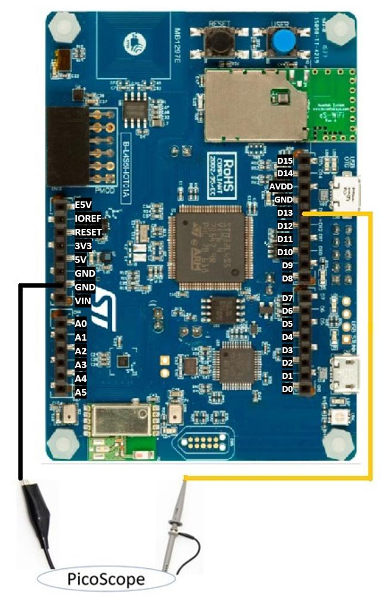

Contents
The goal of this lab is to learn:
- Analog output of mbed
- PWM output of mbed
- Comparison between analog output and PWM
1 Lab Due
Mar. 2, 2022
2 Lab Introduction
Mbed has two interfaces to support non-digital outputs: AnalogOut and PwmOut. The AnalogOut Interface uses digital to analog converter (DAC) circuit on chip to generate desired voltage level at an analog output pin. The voltage output of AnalogOut Interface has the characteristic of the DAC: voltage range between VSS and VCC, driving current, conversion speed and accuracy.
The PwmOut interface can be used to set the frequency and duty-cycle ratio (percentage of voltage high in a cycle) of a digital pulse train. PWM signals are often used to drive a motor servo. We will use PWM to control the Boe Bot Car at later lab.
3 Equipment List
- B_L4S5I_IOT01A * 1
- Picoscope * 1
- Wire * 20
4 Lab Description
4.1 Lecture Notes
- Chapter 4: Analog Output ch4_dac.pdf
4.2 How to Use PicoScope
Please read through chapter 4 of PicoScope 6 User's Guide to get a general idea of picoscope's function.
What is Picoscope?
The PicoScope 2000 Series includes mixed signal models that include 16 digital inputs so that you can view digital and analog signals simultaneously.
The digital inputs can be displayed individually or in named groups with binary, decimal or hexadecimal values shown in a bus-style display. A separate logic threshold from –5 V to +5 V can be defined for each 8-bit input port. The digital trigger can be activated by any bit pattern combined with an optional transition on any input. Advanced logic triggers can be set on either the analog or digital input channels, or both to enable complex mixed-signal triggering.
The digital inputs bring extra power to the serial decoding options. You can decode serial data on all analog and digital channels simultaneously, giving you up to 18 channels of data. You can for example decode multiple SPI, I²C, CAN bus, LIN bus and FlexRay signals all at the same time!
Please go to Picoscope download site
Select "Picoscope 2000 Series" --> "Picoscope 2204A" --> "Software" and select Windows or Mac version. Install the downloaded Picoscope 6 software.
4.3 Analog output
Using the probe with picoscope to measure the voltage at PA_4.
Connect the probe to the pin of PA_4 and the ground. Screenshot
Create a new program.
Open the File menu and select New Program....
Select "empty Mbed OS program" under MBED OS 6 Enter 3_1_Analog_Output for Program name. Check "Make this the active program" (default). Under "Mbed OS Location", check "Link to an existing shared Mbed OS instance" and select "~/Mbed Programs/mbed01/mbed-os/". This will reuse Mbed OS in mbed01/. Click "Add Program".
Copy the following codes into main.cpp.
1 #include "mbed.h" 2 3 AnalogOut Aout(PA_4); 4 int main(){ 5 while(1){ 6 Aout = 0.25; // 0.25 * 3.3 = 0.825 v 7 ThisThread::sleep_for(2s); 8 Aout = 0.5; // 0.50 * 3.3 = 1.650 v 9 ThisThread::sleep_for(2s); 10 Aout = 0.75; // 0.75 * 3.3 = 2.475 v 11 ThisThread::sleep_for(2s); 12 } 13 }
AnalogOut is a class which is used for setting the voltage on a pin. We will show you where the PA_4 at the B_L4S5I_IOT01A is.
AnalogOut Aout(PA_4);
Compile and run the program
Start the picoscope app
Select "input range A" as +-5 and collection time as 1 s/div
The voltage will shows on the monitor.
Screenshot your result of picoscope.
{kind=link}
{kind=link}
4.4 Generate a sawtooth waveform
Create a new program.
Open the File menu and select New Program....
Select "empty Mbed OS program" under MBED OS 6 Enter 3_2_Sawtooth_Waveform for Program name. Check "Make this the active program" (default). Under "Mbed OS Location", check "Link to an existing shared Mbed OS instance" and select "~/Mbed Programs/mbed01/mbed-os/". This will reuse Mbed OS in mbed01/. Click "Add Program".
Copy the following codes into main.cpp.
1 #include "mbed.h" 2 3 // Initialize a pins to perform analog and digital output functions 4 // Adjust analog output pin name to your board spec. 5 AnalogOut aout(PA_4); 6 DigitalOut dout(LED1); 7 8 int main(void) 9 { 10 while (1) { 11 // change the voltage on the digital output pin by 0.1 * VCC 12 // and print what the measured voltage should be (assuming VCC = 3.3v) 13 for (float i = 0.0f; i < 1.0f; i += 0.1f) { 14 aout = i; 15 printf("aout = %f volts\n", aout.read() * 3.3f); 16 // turn on the led if the voltage is greater than 0.5f * VCC 17 dout = (aout > 0.5f) ? 1 : 0; 18 ThisThread::sleep_for(1s); 19 } 20 } 21 }
Compile and run the program
Switch to the picoscope application
If you already left picoscope application, please start it again.
Select collection time as 5 s/div
Using the probe with picoscope to measure the voltage at PA_4.
The voltage will shows on the monitor.
Screenshot your result of picoscope.
The Output terminal will show the Mbed printf output.
Screenshot your result on the Output terminal.
{kind=link}
4.5 Generate a sine waveform
Create a new program.
Open the File menu and select New Program....
Select "empty Mbed OS program" under MBED OS 6 Enter 3_3_Sine_Waveform for Program name. Check "Make this the active program" (default). Under "Mbed OS Location", check "Link to an existing shared Mbed OS instance" and select "~/Mbed Programs/mbed01/mbed-os/". This will reuse Mbed OS in mbed01/. Click "Add Program".
Copy the following codes into main.cpp.
1 #include "mbed.h" 2 3 const double pi = 3.141592653589793238462; 4 const double amplitude = 0.5f; 5 const double offset = 65535 / 2; 6 7 // The sinewave is created on this pin 8 // Adjust analog output pin name to your board spec. 9 AnalogOut aout(PA_4); 10 11 int main() 12 { 13 double rads = 0.0; 14 uint16_t sample = 0; 15 16 while (1) { 17 // sinewave output 18 for (int i = 0; i < 360; i++) { 19 rads = (pi * i) / 180.0f; 20 sample = (uint16_t)(amplitude * (offset * (cos(rads + pi))) + offset); 21 aout.write_u16(sample); 22 } 23 } 24 }
Compile and run the program
Switch to the picoscope application
Using the probe with picoscope to measure the voltage at PA_4.
Select collection time as 20 ms/div
The waveform will shows on the monitor.
Screenshot your result of picoscope.
{kind=link}
4.6 mbed PWM Output
We will measure a different pinout, so please unplug B_L4S5I_IOT01A and probe D13 pin.
Make sure the selected pin can support PWM. Please refer to Pinmap of B_L4S5I_IOT01A on PWM signals.
Using the probe with picoscope to measure the voltage at D13.
Create a new program.
Open the File menu and select New Program....
Select "empty Mbed OS program" under MBED OS 6 Enter 3_4_PWM_Ouput for Program name. Check "Make this the active program" (default). Under "Mbed OS Location", check "Link to an existing shared Mbed OS instance" and select "~/Mbed Programs/mbed01/mbed-os/". This will reuse Mbed OS in mbed01/. Click "Add Program".
Copy the following codes into main.cpp.
1 #include "mbed.h" 2 3 // Adjust pin name to your board specification. 4 // You can use LED1/LED2/LED3/LED4 if any is connected to PWM capable pin, 5 // or use any PWM capable pin, and see generated signal on logical analyzer. 6 PwmOut led(LED1); 7 8 int main() 9 { 10 // specify period first 11 led.period_ms(4000); // 4 second period 12 led.write(0.50f); // 50% duty cycle, relative to period 13 //led = 0.5f; // shorthand for led.write() 14 //led.pulsewidth_ms(2000); // alternative to led.write, set duty cycle time in milliseconds 15 while (1); 16 }
PWMOut is a class which generates a pulse-width modulation digital output. This is the PWM pinout which we use.
PwmOut led(LED1);
Compile and run the program
Switch to the picoscope application
Using the probe with picoscope to measure the voltage at D13.
The waveform will shows on the monitor.
Screenshot your result of picoscope.
{kind=link}
{kind=link}
{kind=link}
5 Demo and Checkpoints
- Show the waveform results above.
- Show your git remote repository.
- How to find analog output pins and PWM pins from Pinmap?